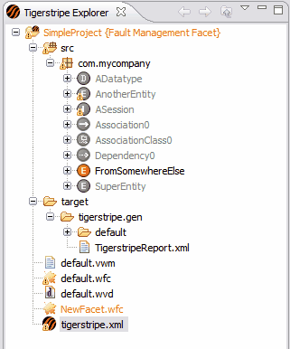

After you define your Service Contract Facet and define its scope, you will want to make the facet active. Tigerstripe Explorer provides visual feedback when you select a facet as active and displays which items are included and which items are not included in the facet. That is, all excluded artifacts appear with a grey icon.

The selected facet becomes the active facet. The facet name and the project name is highlighted in orange to represent the active facet in Tigerstripe Explorer.
 Project Generation with Active Facets
Project Generation with Active Facets

© copyright 2005, 2006, 2007 Cisco Systems, Inc. - All rights reserved